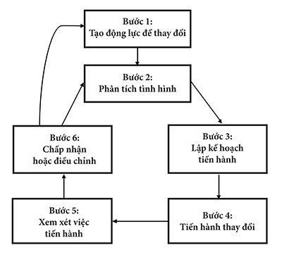

Thay đổi là quy luật của cuộc sống. Và những ai chỉ nhìn vào quá khứ hoặc hiện tại thì chắc chắn sẽ bỏ lỡ tương lai.
John F. Kennedy, cựu Tổng thống Mỹ
Không còn hoài nghi gì nữa, thế giới đang thay đổi với tốc độ chưa từng có hoặc thậm chí người ta chưa từng hình dung ra. Có những ngành nghề được sinh ra hoặc biến mất – dường như chỉ trong một thời gian ngắn. Công ty nào đoán trước, đi đầu và hưởng lợi từ những thay đổi này trong nhiều trường hợp sẽ thành công vượt bậc. Và cơ sở doanh nghiệp nào không chuẩn bị, bị bất ngờ, bị động sẽ chậm chân trước các đối thủ. Nhiều cơ quan, tổ chức vẫn tiếp tục thua lỗ hoặc biến mất hoàn toàn khỏi thị trường.
Một lý do khiến những công ty không theo kịp sự thay đổi là do hài lòng, tự mãn với những hệ thống và thủ tục mà họ đã làm việc từ lâu đời. Họ trở thành kẻ nô lệ đối với văn hóa công ty – cách sinh hoạt của cơ quan, tổ chức – mà họ vốn đã quen thuộc.
Nếu muốn tồn tại, chúng ta cần xem xét kiểu tư duy, cách hoạt động của công ty mình bằng cái nhìn không hài lòng nhằm tìm cách cải thiện, sửa đổi. Chúng ta cần xác định được thông lệ hoặc thói quen hoạt động nào mang lại kết quả như mong đợi. Nếu không, chúng ta cần chuẩn bị tiến hành bất cứ thay đổi cần thiết nào để cải tổ nhằm giúp cơ quan, tổ chức mình thành công.
Trước đây không quá lâu, người ta hiếm thấy máy tính trên bàn làm việc của quản trị viên hay nhà quản lý. Thời đó, máy điện toán thường dành riêng cho những chuyên viên để cung cấp, in ra dữ liệu cho nhà quản lý sử dụng. Ngày nay, máy tính là công cụ thiết thực hiện diện trên bàn làm việc của hầu hết quản trị viên. Thay vì phải lệ thuộc vào những báo cáo từ các chuyên viên máy tính như trước đây, thông tin mới nhất bây giờ nằm ngay đầu ngón tay họ. Chỉ cần gõ lên bàn phím hoặc chạm tay vào màn hình cảm ứng, người ta có ngay các mẫu thiết kế và sơ đồ được điện toán hóa, và việc sản xuất do máy tính trợ giúp, robot và những công nghệ tân tiến vốn đang thay đổi liên tục trở thành những điều không thể thiếu trong những cơ quan, tổ chức phát triển nhất.
Những thay đổi này đã thúc đẩy các cơ quan, tổ chức phải xem xét lại và tái cấu trúc những hoạt động nào có liên quan tới công nghệ.
Chẳng có gì vĩnh cửu ngoại trừ sự thay đổi.
Heraclitus, triết gia
Tuy nhiên, sự thay đổi không chỉ giới hạn trong những vấn đề về kỹ thuật. Nhiều nhà quản lý tài ba tiến hành đánh giá định kỳ từng quy trình, phương pháp hoạt động và các hệ thống trong công ty của mình. Cho dù ở cương vị nhà quản lý hoặc chỉ là những nhân viên thực hiện theo các quy trình có sẵn, chúng ta nên tận tụy đề xuất, cũng như ủng hộ những cải tiến trong cách làm việc nhằm đạt hiệu quả cao nhất.
Thêm vào đó, trong nhiều trường hợp, do quá trình tái cấu trúc tại nhiều cơ quan, tổ chức, dẫn tới việc giảm quy mô hoạt động và đặt gia công ở bên ngoài, tinh thần làm việc của nhân viên thường giảm sút. Với những ai từng coi công việc của mình là ổn định, lâu dài và là sự nghiệp cả đời, thì giờ đây trong nhiều công ty, sự trung thành và tận tụy vô điều kiện của họ đã bị thay thế bằng sự hoài nghi và không chắc chắn. Do đó, văn hóa mới của công ty cũng cần thay đổi để vượt qua những lo ngại này, phục hồi tinh thần làm việc tận tụy và sự hợp tác.
Thật vậy, trong nhiều năm qua, các khái niệm mới về quản trị nhân sự, quản trị sản xuất đã giúp gia tăng năng suất, nâng cao chất lượng làm việc, kích thích sáng tạo và cải tiến. Đối với những nhà quản lý, việc công nhận và chấp nhận sự thay đổi về chuyên môn dễ dàng hơn rất nhiều, giúp họ thay đổi cách giao tiếp với người khác.
Những thách thức khi bắt đầu thay đổi
Mỗi khi tiến hành thay đổi quan trọng trong cơ quan, tổ chức, khó khăn hay thách thức lập tức xuất hiện. Một số khó khăn chỉ dính líu tới những cá nhân, một số liên quan tới các nhóm làm việc và một số thách thức nổi lên trên toàn bộ công ty. Để có thể thay đổi thành công trong cơ quan, tổ chức, chúng ta cần hiểu rõ về những thách thức đó và hãy chuẩn bị để giải quyết vấn đề một cách tự tin và chuyên nghiệp.
Trên thực tế, quá trình thay đổi thường gây ra sự kháng cự ở mức độ nào đó. Một số người có thể cảm thấy họ đang mất khả năng, sự tự chủ hoặc những nguồn lực do môi trường làm việc thay đổi. Hậu quả là họ cứ bám vào nguyên trạng. Để bảo đảm thành công, chúng ta cần thách thức chính mình, thuyết phục người khác để tranh thủ sự ủng hộ và hướng tới những kết quả tích cực.
Một trong những thách thức lớn nhất khi dấn thân vào quá trình thay đổi là làm sao cho người ta chấp nhận thay đổi một cách nghiêm túc. Trong thời gian này, một số cá nhân thường có thái độ “chờ xem”, tức là không sốt sắng thay đổi và cũng không phản đối sự thay đổi đó. Thách thức của chúng ta là truyền cảm hứng cho chính mình và những cộng sự, ủng hộ sự thay đổi và thậm chí trở thành những “chiến sĩ” tranh đấu, bênh vực cho sự thay đổi.
Giảm thiểu lo lắng
Tất cả chúng ta đều có những thay đổi trọng đại trong cuộc đời, mà không nhiều thì ít ra là hai lần.
Harrison Ford, diễn viên và nhà sản xuất phim
Hầu hết chúng ta đều lo lắng khi những thay đổi làm ảnh hưởng tới mình. Và do đó, khi không lo lắng, người ta sẽ dễ dàng chấp nhận thay đổi. Vì vậy, nhằm giảm thiểu lo lắng, chúng ta cần hiểu rõ kế hoạch thay đổi, chấp nhận kế hoạch này cũng như vai trò của chúng ta trong quá trình thay đổi và thể hiện sự quyết tâm thực hiện.
Tranh thủ sự hợp tác
Bất cứ sự thay đổi nào trong cơ quan, tổ chức đều có thể làm ảnh hưởng tới sự hợp tác. Trong quá trình thay đổi, người ta thường thấy sự liên hệ và hợp tác giữa các phòng ban, đội nhóm và thậm chí giữa những cá nhân đều có thể bị trục trặc. Là người tham dự trong đó, chúng ta gặp thách thức khi phá bỏ các bức tường ngăn cách và xây dựng những cây cầu hợp tác giữa các bộ phận, chức năng trong cơ quan, tổ chức.
Khi môi trường làm việc thay đổi, người ta thường bối rối về những việc nào cần ưu tiên thực hiện. Chẳng hạn, nếu chúng ta đang tiếp nhận một quản trị viên mới, thì liệu họ sẽ nghĩ gì về công việc có mức độ ưu tiên nhất? Nếu muốn thay đổi thành công, đầu tiên chúng ta nên tập trung vào việc gì? Có thể giải quyết thách thức này thông qua sự trao đổi ý kiến một cách cẩn thận và kỹ càng. Chúng ta không thể thành công với kiểu quản lý độc đoán, mệnh lệnh như trong quân đội. Chúng ta cần sức mạnh và sự đóng góp sáng tạo của nhân viên nhằm duy trì thế cạnh tranh trong thế giới kinh doanh đang thay đổi nhanh chóng và cạnh tranh cao độ.
Nhân viên hiểu quá trình thay đổi như thế nào?
Tôi đã chú ý từ lâu rằng những người thành công hiếm khi nào nghỉ ngơi và rơi vào thế bị động. Họ giao thiệp và chủ động trong mọi việc.
Leonardo da Vinci, nhà thông thái
Trước khi tiến hành bất cứ hoạt động nào, điều quan trọng là cần xác định những người liên quan hiểu được tình hình ra sao. Công ty Dale Carnegie and Associates đã phát triển một quy trình cho mục đích này và gọi nó là “Tự khảo sát để chuẩn bị thay đổi”. Quy trình này có thể do sếp tiến hành với nhân viên của mình, hoặc do tư vấn viên hoặc một vị sếp nào đó trong công ty thực hiện. Phương pháp thực hiện là yêu cầu nhân viên tiến hành những lần “tự khảo sát” cùng với nhau nhằm hai mục đích. Đầu tiên là đào sâu tìm hiểu về việc nhân viên có thể phản ứng với sự thay đổi như thế nào. Thứ hai là giúp cho những người đang “tự khảo sát” hiểu nhiều hơn về phản ứng của chính họ đối với sự thay đổi. “Tự khảo sát” bao gồm ba loại câu hỏi sau:
Câu hỏi căn cứ vào sự thật
Nhóm câu hỏi đầu tiên này nhằm thu thập thông tin thích hợp. Chẳng hạn, để xem sự thay đổi có làm biến đổi cách thực hiện công việc:
• Giờ đây, chúng ta thực hiện công việc này như thế nào?
• Những phần nào của công việc dễ thực hiện nhất?
• Những phần nào khó thực hiện hơn?
• Nếu có thể thay đổi một phần của công việc, chúng ta sẽ làm gì?
Câu hỏi về nguyên nhân
Loại câu hỏi này tìm hiểu động cơ hoặc nguyên nhân đằng sau một số câu hỏi căn cứ vào sự thật ở trên. Đây thường là những câu hỏi “tại sao” và “như thế nào”.
• Các phương pháp hiện đang sử dụng giúp ích hoặc gây cản trở đến việc đạt được mục tiêu của phòng ban như thế nào?
• Tại sao chúng giúp ích hoặc gây cản trở?
• Chúng ta đặc biệt thích gì ở những phương pháp hiện tại? Tại sao?
• Chúng ta đặc biệt không thích gì ở những phương pháp hiện tại? Tại sao?
Câu hỏi dựa trên giá trị
Cuối cùng, loại câu hỏi này giúp chúng ta kết nối với các giá trị của người đó và giá trị chung.
• Một sự thay đổi trong công sở nào làm chúng ta nhớ hoài?
• Phản ứng ban đầu của chúng ta đối với sự thay đổi đó là gì?
• Kết quả cuối cùng của sự thay đổi đó là gì?
• Chúng ta rút ra bài học gì về bản thân?
• Chúng ta thấy được một ưu thế nào của chính mình?
• Ưu thế này tác động lên mình như thế nào trong tình huống đó?
• Hãy cho tôi biết về khoảng thời gian đã tận dụng ưu thế này trong một tình huống thay đổi nào đó.
Mô hình Thay đổi
Khi tiến hành thay đổi trong môi trường công sở, chúng ta có thể khó đoán chính xác tình hình vì có nhiều quy trình thay đổi và nhiều người tham gia theo những cách khác nhau. Hai người khác nhau sẽ phản ứng theo hai cách khác nhau. Và ngay cả với cùng một phương pháp, một thay đổi được áp dụng trong nhiều bộ phận của một cơ quan, tổ chức sẽ cho ra những kết quả hoàn toàn khác biệt.
Mô hình Thay đổi sau đây cho thấy chúng ta có thể chuẩn bị kỹ càng ở đầu quá trình thay đổi và tiến hành những bước sau đó. Nó cho phép chúng ta tiếp cận có cấu trúc, bài bản đối với sự thay đổi trong cơ quan, tổ chức và vẫn duy trì tính uyển chuyển.
Hãy trở thành một người học hỏi thay đổi. Ðó là vấn đề diễn ra không ngừng.
Anthony J. D’Angelo, doanh nhân

Bước 1. Tạo động lực để thay đổi
Mô hình Thay đổi này bắt đầu tại điểm mà cơ quan, tổ chức tìm thấy động lực để thay đổi. Đôi khi, những vấn đề bên ngoài khiến cần phải thay đổi, chẳng hạn việc tái tổ chức, thay đổi cách quản trị, tái bố trí hoặc bị thâu tóm/sát nhập. Cũng có khi, thay đổi xuất phát từ những vấn đề nội bộ, chẳng hạn việc nâng cấp công nghệ, mở rộng dòng sản phẩm hoặc dịch vụ.
Bước 2. Phân tích tình hình
Khi cơ quan, tổ chức có nhiều động lực để thay đổi, ban giám đốc tiến hành phân tích tình hình kỹ càng về những rủi ro và cơ hội liên quan tới sự thay đổi dự kiến.
• Chúng ta nhận được lợi ích nào khi tiến hành thay đổi?
• Phải trả giá như thế nào?
• Khi tiến hành thay đổi, chúng ta sẽ gặp những rủi ro gì?
• Khi không tiến hành thay đổi, sẽ gặp những rủi ro gì?
Bước 3. Lập kế hoạch tiến hành
Khi đã xác định được cơ hội, lợi ích vượt trội so với rủi ro, cần đưa ra kế hoạch tiến hành. Nhiều cơ quan, tổ chức gặp thất bại vì thiếu hoạch định cẩn thận, kỹ càng. Trong bước này, chúng ta cẩn trọng lên kế hoạch nhằm bảo đảm thành công. Cần cân nhắc các vấn đề hệ trọng sau đây:
• Hoạch định về tác động của quá trình thay đổi lên những người sẽ bị ảnh hưởng nhiều nhất.
• Hoạch định về tác động của quá trình thay đổi lên những quy trình, hệ thống trong cơ quan, tổ chức sẽ bị ảnh hưởng nhiều nhất.
• Đưa ra kế hoạch từng bước để tiến hành thay đổi trong cơ quan, tổ chức.
• Đưa ra kế hoạch đánh giá mức độ thành công khi thay đổi.
Bước 4. Tiến hành thay đổi
Tùy thuộc vào thể loại và phạm vi thay đổi, có thể tiến hành từ từ hoặc nhanh chóng trong cơ quan, tổ chức mình. Những thay đổi như sa thải nhân viên hoặc sát nhập/ thâu tóm công ty thường không báo trước lâu, nhưng việc sắp xếp hoặc tái tổ chức nhân sự, áp dụng công nghệ mới cần thực hiện theo từng giai đoạn và mất một khoảng thời gian. Vai trò quan trọng của ban giám đốc trong bước này là duy trì cơ chế liên lạc cởi mở và trung thực giữa họ với nhau và với đội ngũ nhân viên.
• Xác định trách nhiệm cá nhân. Mặc dù sự thay đổi thường ảnh hưởng tới nhiều cá nhân, nhưng mỗi người có một vai trò riêng biệt. Bill có thể chịu trách nhiệm cho giai đoạn A, Sue cho giai đoạn B… Xác định công việc của từng người một cách rõ ràng và chi tiết là điều rất cần thiết để đạt mục tiêu.
• T hông báo và tiến hành thay đổi. Nếu mức độ thay đổi tương đối nhỏ, chỉ cần một buổi họp giữa sếp và nhân viên để thông báo và bắt đầu thực hiện. Trong những trường hợp phức tạp, cần có nhiều buổi họp ở nhiều cấp độ khác nhau. Mọi người có liên quan cần hiểu được phải làm gì, không chỉ ở góc độ từng người và toàn bộ nhóm, mà mỗi phòng ban tham gia cũng phải hiểu rõ công việc của họ và cách giao tiếp, phối hợp với nhau như thế nào.
• Tuân thủ thời gian biểu . Mốc thời gian cho mỗi giai đoạn của dự án nên rõ ràng đối với từng người và đưa ra từng bước cụ thể để không có giai đoạn nào bị chậm, làm đình trệ toàn bộ dự án.
• Nhắc lại lợi ích đạt được. Khi bắt đầu quá trình thay đổi, cần thông báo cho tất cả người tham dự về lợi ích của họ trong việc thay đổi này. Trong suốt quá trình này, hãy nhắc lại theo định kỳ lợi ích của tất cả người tham gia nhằm củng cố, tăng cường động lực thúc đẩy họ.
Bước 5. Xem xét việc tiến hành
Trong quá trình tiến hành thay đổi, chúng ta giám sát kết quả của các quy trình và hệ thống mới. Do các thành viên của nhóm hiện trong môi trường làm việc đang thay đổi, chúng ta không thể cho rằng việc thay đổi đã diễn ra chính xác theo kế hoạch hoặc những ai bị ảnh hưởng sẽ có phản ứng theo như dự định. Vai trò của chúng ta là thiết lập và thường xuyên theo dõi các mốc giám sát nhằm xác định quá trình thay đổi có diễn ra đúng kế hoạch và cho kết quả mong muốn hay không.
• Đưa ra cách đánh giá kết quả. Cách thức đánh giá kết quả có thể theo phương pháp định tính hoặc định lượng, hoặc cho dù chưa tìm ra phương pháp nào khả thi, có thể đặt ra các tiêu chuẩn đặc biệt để đánh giá.
• Thông báo kết quả. Hình thức tốt nhất là sử dụng các phiếu hoặc biên bản công việc – và thông báo thêm trong những buổi huấn luyện cũng như thảo luận riêng với từng người. Hãy phối hợp thu thập thông tin và đánh giá tác động của sự thay đổi. Không chỉ các thành viên của nhóm hoặc toàn bộ nhóm, mà tất cả những ai có liên quan cần biết và tuân thủ cách thức thông báo này.
• Thường xuyên thông báo tình hình cho các thành viên chủ chốt trong suốt quá trình đánh giá. Hãy cho các thành viên biết được nếu có và khi nào trục trặc xảy ra, đồng thời phối hợp với họ để khắc phục.
Bước 6. Chấp nhận hoặc điều chỉnh
Nếu quá trình xem xét này kết luận rằng sự thay đổi không diễn ra như dự định, thì khi đó cần tiến hành điều chỉnh. Tuy nhiên, giả sử đã phân tích và thực hiện đúng theo kế hoạch, chúng ta vẫn có thể xem xét và điều chỉnh nhằm đạt kết quả tối ưu. Sau đây là một số gợi ý:
• Xác định xem kết quả đạt được có đúng như kế hoạch không.
• Thảo luận cùng những nhân vật chủ chốt nhằm xem xét có cần điều chỉnh hay không.
• Giữ kênh liên lạc thông suốt với mọi người có liên quan.
• Thực hiện điều chỉnh đối với bước 4 và bước 5, nếu cần.
Bốn nguyên tắc cơ bản về kế hoạch tiến hành
Để kế hoạch có thể thành công, cần tuân theo bốn nguyên tắc sau đây:
1. Đơn giản. Sử dụng ngôn ngữ rõ ràng, đơn giản, dễ hiểu để người ta dễ thực hiện. Thay vì mang nặng tính học thuật và phân tích nguồn gốc sâu xa, kế hoạch cần đưa ra phương pháp thực hiện phổ thông nhằm giải quyết những tình huống phát sinh.
2. Đừng làm mất khả năng sáng tạo. Cần mô tả mỗi mục tiêu một cách cẩn thận nhằm tránh gây hiểu lầm. Tuy nhiên, với kế hoạch tổng quát, không cần phải chi tiết. Các chiến lược cũng như chiến thuật cần mang tính mở rộng nhằm có thể phát triển thêm khi kế hoạch tiến triển. Do đó, kế hoạch đừng ràng buộc quá chặt chẽ vào nhóm thực thi, mà cần cho các thành viên của nhóm có thể linh động, uyển chuyển thực hiện và khuyến khích họ bổ sung thêm chi tiết vào kế hoạch.
3. Tập trung vào kết quả trước mắt. Mặc dù không bao giờ lơ là đối với những mục tiêu dài hạn, nhưng nhằm tạo động lực và tính thuyết phục, người ta cần thấy được những kết quả trước mắt. Khi thấy mình đạt được những kết quả ban đầu, mọi người sẽ phấn chấn để tiến bước.
4. Nhấn mạnh vào những lợi ích của sự thay đổi. Không như phương pháp hoạch định truyền thống vốn chú trọng vào “cái gì”, “ở đâu” và “như thế nào”, một kế hoạch hữu hiệu cần nhấn mạnh vào “tại sao”. Khi hiểu được lý do tại sao công ty và chính họ hưởng lợi từ quá trình thay đổi, người ta càng quyết tâm thực hiện.
Hầu hết sự thay đổi mà chúng ta thấy trong cuộc sống là do người ta còn thích hay không thích sự việc nào đó.
Robert Frost, thi sĩ
Thay đổi mang tính sự sáng tạo
Thay đổi một cách chuyên nghiệp đồng nghĩa với thực hiện một cách sáng tạo. Bởi vì môi trường làm việc sẽ trở nên mới mẻ sau khi thay đổi, khi nào là lúc thích hợp để cải tiến và sáng tạo? Với kiểu suy nghĩ và hành động sáng tạo, chúng ta có thể làm quá trình thay đổi hào hứng, chuyên nghiệp hơn và đạt nhiều kết quả sôi động và thú vị hơn. Để có thể sáng tạo, hãy nhớ những nguyên tắc sau đây:
• Giữ tinh thần phóng khoáng, cởi mở. Thông thường, chúng ta không hào hứng với quá trình thay đổi do nhìn vào những gì vô tác dụng, không hiệu quả, thay vì nhìn vào mặt tích cực, hữu ích, có thể phát triển. Chúng ta kiềm chế tính sáng tạo bằng sự cố chấp và chú ý quá nhiều vào những khó khăn, trở ngại. Thậm chí một ý tưởng ban đầu có vẻ không phù hợp, nhưng với cái nhìn phóng khoáng, cởi mở, chúng ta cho phép nó phát triển và có thể xem nó mở rộng tới mức nào.
• Tìm hiểu và nghiên cứu. Chúng ta không phải đưa ra giải pháp từ tay trắng. Cho tới nay, nhiều cơ quan, tổ chức đã có kinh nghiệm về quá trình thay đổi và cũng có nhiều cuốn sách, tài liệu viết về đề tài này. Hãy tìm hiểu, nghiên cứu người khác đã thực hiện thành công như thế nào và tiến hành dựa trên ý tưởng của họ.
• Trao đổi ý kiến. Các nghiên cứu cho thấy rằng một số cá nhân cảm thấy bị cách biệt trong quá trình thay đổi, cho dù mọi người trong cơ quan, tổ chức đó cùng có thay đổi tương tự nhau. Hãy nói chuyện, trao đổi ý kiến với những người khác trong cùng quá trình thay đổi. Hãy thảo luận với những người chủ chốt trong quá trình này nhằm hiểu được kế hoạch, mục tiêu và kết quả nhắm tới.
• Tự hỏi. Khoảng thời gian thay đổi trong môi trường công sở là cơ hội tốt để tự đánh giá. “Tôi có thể mở rộng kiến thức và kỹ năng ra sao khi tham gia trọn vẹn vào quá trình thay đổi? Tôi có thể tạo nên cơ hội mới cho chính mình như thế nào? Tôi cần cởi mở hơn và đón nhận thay đổi ở điểm nào?”
• Tưởng tượng. Có lẽ sự thay đổi này là cơ hội quý báu cho chúng ta. Tại sao không hình dung ra những cách thức để tiến hành thay đổi tốt nhất và tận dụng nó nhằm đạt tới mức độ kiến thức và kỹ năng cao hơn? Chúng ta có thể thoải mái hình dung về nghề nghiệp của mình mà không hề bị giới hạn, giống như hình dung kết quả thay đổi trong môi trường công sở.
Tiếp sinh lực cho sự thay đổi
Một trong những thách thức từ quá trình thay đổi là nó có thể làm chúng ta mệt mỏi. Tất cả nỗ lực của chúng ta đều tập trung vào những công việc, trách nhiệm và mối quan hệ mới. Vì vậy, chúng ta cần tìm cách duy trì và thậm chí tiếp thêm năng lượng trong những lúc này. Một số chiến lược để tái tạo năng lượng cho chính mình bao gồm:
• Tạo ra tầm nhìn. Không có gì thúc đẩy người ta bằng một tầm nhìn hấp dẫn, thuyết phục. Chúng ta cần hình dung một cách rõ ràng rằng mình sẽ thành công sau quá trình thay đổi. Hãy tưởng tượng những lợi ích từ quá trình này: tạo ra nhiều cơ hội mới, xây dựng một tương lai đầy thú vị và sôi nổi.
• Liệt kê các cơ hội. Những cơ hội phát sinh từ sự thay đổi này là gì? Hãy liệt kê các cơ hội mà chúng ta có thể có được: bổ sung những kỹ năng mới, gặp gỡ và làm quen những người có tài năng, uy thế và ghi thêm các thành tích đáng giá vào bản sơ yếu lý lịch của mình.
• Tạo năng lượng. Thật khó để tạo ra năng lượng trong môi trường chân không. Hầu hết chúng ta cần người khác kích thích mình thông qua ý tưởng, lời khuyên, sự đánh giá và trợ giúp của họ. Những lần thay đổi đều tạo cơ hội có thêm những người mới hiểu, tin tưởng và sẵn lòng giúp chúng ta thành công.
• Tạo cầu nối. Sự thay đổi trong bất cứ cơ quan, tổ chức nào đều liên quan tới việc tạo lập mối quan hệ mới. Đôi khi chúng ta cưỡng lại những mối quan hệ mới này, nhất là khi nó liên quan tới sếp mới hoặc khả năng chúng ta bị mất quyền lực. Thay vì trốn tránh các mối quan hệ đó, hãy tìm những điểm hay ho, thú vị từ chúng, xây dựng cầu nối giữa những người “khó gần” với chính mình. Việc gặp gỡ, tiếp xúc những người mới thường tiếp thêm sinh lực, bởi vì chúng ta có thể tìm được những điểm tương đồng với nguyên tắc và mục tiêu của mình và khả năng sáng tạo thông qua việc cộng tác với họ.
Củng cố động lực
Trong quá trình thay đổi, nhiều người cần tăng cường động lực, sự hứng thú cho mình. Sau đây là 12 đề nghị để giúp chúng ta thực hiện điều đó:
1. Kiên nhẫn. Những gì có vẻ như không đổi trong hiện tại có thể thay đổi nhanh chóng trong những năm sắp tới.
2. Giải quyết trục trặc hay sự cố phát sinh trong hiện tại, đừng lo lắng về tương lai và tin tưởng rằng chúng ta sẽ thành công.
3. Sẵn lòng đối mặt với vấn đề đang xảy ra. Hãy kiểm tra, thử nghiệm những điều mới mẻ với người bạn hiểu rõ và có thể ủng hộ chúng ta.
4. Hãy tập buông bỏ những cái cũ để có thể tiếp nhận vấn đề mới mẻ.
5. Dành thời gian nghiên cứu, học hỏi về sự thay đổi.
6. Tìm kiếm cơ hội. Không phải lúc nào chúng ta cũng thấy được lợi ích từ sự thay đổi. Hãy tiếp tục tìm kiếm cơ hội mới.
7. Chăm sóc tinh thần của mình. Chúng ta có thể tạo nên một ngày vui vẻ, tươi sáng như mình muốn.
8. Hãy thả lỏng. Khi đó, sự đột phá sẽ xuất hiện.
9. Chuẩn bị đón nhận sự mới mẻ. Khi cánh cửa này đóng lại, cánh cửa khác sẽ mở ra.
10. Đối mặt với sự sợ hãi. Cố gắng coi nỗi sợ hãi như sinh lực dưới dạng khác.
11. Tin tưởng vào quá trình thay đổi. Con đường luôn rộng mở và giải pháp sẽ xuất hiện.
12. Sự thay đổi tùy thuộc vào chúng ta. Hãy có thái độ chấp nhận trách nhiệm.
Những sai lầm thường mắc phải khi thay đổi
Có 8 sai lầm thường gặp trong quá trình thay đổi ở cơ quan, tổ chức. Chúng hủy hoại thiện chí thay đổi và gây ra tâm lý phản đối cũng như làm thờ ơ, lãnh đạm đối với nhiệt tình thay đổi. Nếu tránh được những lỗi lầm này, chúng ta có thể thúc đẩy mọi người đi theo con đường cải cách:
1. Tiến hành cuộc đại cải tổ trong khoảng thời gian quá ngắn. Trong một lúc, người ta chỉ có thể thực hiện nhiều thay đổi với điều kiện không bị quá tải hoặc quá sức. Do đó, hãy nghiên cứu cẩn thận để ấn định thời gian hợp lý cho quá trình này. Hãy tìm hiểu sự thay đổi nào mang tính khẩn cấp và cần thực hiện ngay, cũng như sự thay đổi nào có thể tiến hành từ từ vào sau này. Khi phân bổ thời gian hợp lý, người ta không chỉ hợp tác với nhau tốt hơn, mà còn làm việc năng suất hơn trước, trong và sau quá trình thay đổi.
2. Thiếu tầm nhìn và chiến lược dài hạn. Trong một số cơ quan, tổ chức, người ta quyết định tiến hành thay đổi ở hiện tại, nhưng rồi phải giải quyết hậu quả sau đó. Để có thể xử lý một cách chuyên nghiệp, cần có tầm nhìn dài hạn, sự liên lạc thông suốt trong cơ quan, tổ chức và cần có một chiến lược vượt xa hơn giai đoạn tiến hành thay đổi vào ban đầu.
3. Không thuyết phục được mọi người. Chỉ ban giám đốc hiểu được nhu cầu cần thay đổi thì không đủ, mà toàn bộ nhân viên trong công ty cũng phải thấy được mục đích đó. Mọi người cần thấy được giá trị của sự thay đổi và xứng đáng để họ thực hiện. Để có được điều này, chúng ta cần đưa ra lý do, dẫn chứng thuyết phục về lợi ích của quá trình thay đổi.
4. Thiếu kỹ năng. Một số trường hợp thay đổi, chẳng hạn thăng chức hoặc thuyên chuyển, có thể làm một số người thiếu kỹ năng để đáp ứng với tình hình hoặc cương vị mới. Chúng ta cần tránh sai lầm này bằng cách chuẩn bị và huấn luyện kỹ năng cho họ trước lúc hoặc ngay khi tiến hành thay đổi (nếu có thể).
5. Thiếu các nguồn lực. Nhiều sáng kiến thay đổi bắt đầu rất có triển vọng nhưng lại kết thúc… èo uột hoặc chết yểu do thiếu những nguồn lực cần thiết. Do đó, cần bảo đảm rằng cơ quan, tổ chức cam kết cung cấp đầy đủ thời gian, nhân lực, vật lực và tài lực để quá trình cải tổ có thể đi tới thành công một cách mỹ mãn.
6. Thiếu sự ủng hộ từ ban giám đốc. Khi đó, sáng kiến đổi mới sẽ gặp nhiều rủi ro. Thông thường, tình trạng này xảy ra khi một số vị lãnh đạo nhận thấy quyền hạn hoặc trách nhiệm của họ bị suy giảm do quá trình thay đổi gây ra. Hơn bất cứ ai hết, cần có sự thông suốt và ủng hộ từ ban giám đốc để có thể tiến hành cải tổ thành công.
7. Thiếu sự phối hợp nhịp nhàng . Mỗi quy trình thay đổi trong một cơ quan, tổ chức sẽ tác động tới những quy trình hoặc hệ thống khác có liên quan tới nó. Chẳng hạn, việc thay đổi một phần mềm không chỉ ảnh hưởng tới những người sử dụng nó, mà còn có tác động tới các phần mềm hoặc chương trình khác tương hợp với nó và những khách hàng, đại lý hoặc nhân viên dùng hệ thống này.
8. Thiếu theo dõi, đánh giá và giám sát kết quả thay đổi. Người ta chấp nhận và tuân thủ quá trình thay đổi như thế nào? Các quy trình và hệ thống được cải thiện nhiều hay ít? Cần bổ sung những gì để sáng kiến thay đổi có thể thành công hơn nữa? Những vấn đề này đôi khi không được chú ý, và do đó, quá trình đổi mới gặp rủi ro hoặc người ta không quyết tâm thay đổi nhiều hơn nữa.
Tạo mối quan hệ tốt trong quá trình thay đổi
Trong cuốn sách kinh điển Đắc nhân tâm , Dale Carnegie đã đưa ra những hướng dẫn được minh chứng theo thời gian nhằm thu phục lòng người. Sau đây là một số nguyên tắc để áp dụng khi giao tiếp, làm việc với mọi người trong quá trình cải tổ. (Danh sách đầy đủ các nguyên tắc sẽ được trình bày trong phần Phụ Lục C ở cuối cuốn sách.)
• Hãy bắt đầu bằng lời khen hoặc sự ca ngợi một cách trung thực.
• Đừng săm soi lỗi lầm của người khác.
• Nói về sai lầm của chính mình trước khi phê bình người khác.
• Hãy dùng câu hỏi để hỏi ý kiến, thay vì trực tiếp đưa ra mệnh lệnh hay yêu cầu.
• Đừng làm mất mặt người khác.
• Hãy khen ngợi sự tiến bộ dù nhỏ nhặt nhất và khen ngợi bất cứ sự tiến bộ nào của người khác.
• Hãy nồng nhiệt tán thành và đừng tiết kiệm lời khen.
• Tạo tiếng thơm cho người khác.
• Đừng trầm trọng hóa sai lầm.
• Hãy làm người khác vui vẻ khi họ thực hiện việc bạn yêu cầu.
Tự kiểm soát trong quá trình thay đổi
Người ta luôn nói thời gian thay đổi mọi thứ, nhưng thật sự chính bạn là người phải thay đổi chúng.
Andy Warhol, họa sĩ
Nếu là nhà lãnh đạo, người khác mong mỏi chúng ta có phản ứng thích hợp khi thay đổi và mọi người trong cơ quan, tổ chức quan sát để xem cách phản ứng của chúng ta. Do đó, chúng ta cần nhớ luôn kiểm soát hành vi và thái độ của mình.
1. Tránh có tư tưởng tiêu cực. Hãy thay thế sự bất mãn hoặc sự lo lắng bằng tư duy về cơ hội và sự phát triển.
2. Cởi mở về những quan ngại của chúng ta. Đừng giấu giếm tâm trạng của mình.
3. Cần có óc thực tế về những thách thức khi đương đầu với sự thay đổi.
4. Hãy thu thập thông tin qua những câu hỏi và việc tìm tòi, nghiên cứu. Cần có nhiều thông tin về quá trình thay đổi. Hãy sử dụng phương pháp “tự khảo sát” như đã được trình bày ở phần trước trong chương này.
5. Hãy làm việc hiệu quả trong quá trình thay đổi như trong vai trò hiện tại của mình. Cần tập trung vào những công việc cũng như tài liệu, sổ sách để có thể bàn giao cho người khác. Sẵn sàng chứng minh năng lực của mình. Nhiều người trong chúng ta không khởi xướng cho quá trình thay đổi, nhưng là người tham gia trong đó. Chương 4 sẽ thảo luận về cách làm thế nào chúng ta có thể chấp nhận và làm việc với những thay đổi trong vai trò người tham gia (mà không phải dẫn dắt).
Vượt qua nỗi lo lắng
Có hai khả năng trong một thế giới cạnh tranh. Bạn thua cuộc, hoặc nếu muốn chiến thắng, bạn có thể thay đổi.
Lester C. Thurow, nhà kinh tế chính trị học
Cho dù ở cương vị lãnh đạo hoặc chỉ tham gia với tư cách thành viên trong quá trình thay đổi tại môi trường công sở, hầu hết chúng ta đều lo lắng ở một mức độ nào đó. Lý do là chúng ta không biết sự thay đổi sẽ tác động tới chúng ta theo cách tích cực hay tiêu cực. Chúng ta không biết chính xác tương lai của mình sẽ diễn ra như thế nào trong và sau quá trình cải tổ này. Chúng ta không biết công việc mình đang làm có tiến triển tốt hay không. Để chúng ta thành công, chúng ta cần tìm ra cách vượt qua sự lo lắng này.
Nhiều người ngại thử nghiệm những ý tưởng mới, ngại mạo hiểm hoặc áp dụng cách tiếp cận khác lạ nhằm giải quyết vấn đề bởi vì nó ẩn chứa rủi ro và họ sợ thất bại. Trên thực tế, sợ thất bại cũng là một điều rất bình thường của con người bởi vì không ai muốn nếm trải mùi vị cay đắng của thất bại. Nhưng nếu không nỗ lực thì làm sao có thể gặt hái thành công.
Trong đời mình, tất cả chúng ta từng va vấp ở một số vấn đề nào đó, nhưng đã rút ra được những bài học từ sự thất bại. Lần đầu tiên thử nghiệm cái mới, hầu như chúng ta không thành công.
Đừng đầu hàng
Ngay cả khi có kinh nghiệm và biết cách thực hiện, chúng ta không phải lúc nào cũng thành công tuyệt đối. Sẽ có những lúc thất bại, nhưng chúng ta đừng để nỗi lo sợ đó đè bẹp chính mình. Chúng ta rút kinh nghiệm từ những sai lầm của mình và áp dụng bài học đó vào những công việc, dự án mới. Trên thực tế, R.H. Macy đã phải đóng cửa tới… bảy cửa hiệu đầu tiên của ông, nhưng thay vì đầu hàng, ông vẫn tiếp tục thử và trở thành một trong những hãng bán lẻ hàng đầu ở Mỹ. Cầu thủ bóng chày Babe Ruth đã từng đánh hỏng trên 1.300 lần trong sự nghiệp của mình, nhưng điều đó không làm người ta chú ý vì anh đã có tới 714 cú ăn điểm trực tiếp (home run).
Tìm hiểu nguyên nhân
Thomas Edison không bao giờ nản lòng khi nghiên cứu về điện năng, nhưng kiên nhẫn không thôi thì vẫn chưa đủ. Mỗi lần thí nghiệm thất bại, ông đều tìm hiểu nguyên nhân và cố gắng tìm ra giải pháp. Người ta kể rằng ông đã thất bại cả ngàn lần trước khi phát minh ra dây tóc dùng trong bóng đèn.
Giảm thiểu rủi ro
Tất cả ý tưởng mới đều có thể gặp phải rủi ro. Nếu một ý tưởng không thành công trong quá khứ, thì vẫn có khả năng nó chưa thành công trong hiện tại. Do đó, cần có biện pháp giảm thiểu rủi ro.
Khi đưa ra kế hoạch tiếp thị nhằm tung ra sản phẩm mới của công ty, Paula nhận thấy mình còn một số điểm chưa chắc chắn và nó có thể làm chệch mục tiêu của cô. Để nhận diện những trở ngại, Paula quyết định thử nghiệm sản phẩm tại ba thành phố trước khi đưa ra kế hoạch sau cùng để phân phối trên toàn quốc. Với mỗi cuộc thử nghiệm, cô ấy có thể rút ra được vấn đề nằm ở đâu và tìm cách khắc phục nó. Vào lúc bắt đầu chiến dịch tiếp thị trên phạm vi quốc gia, do trước đó người ta đã phát hiện và sửa chữa lỗi, nên cơ hội thành công tăng lên rất cao.
Tìm kiếm giải pháp thay thế
Nếu chương trình mà Paula phát triển không hoạt động như ý, công ty có thể đối mặt với nhiều khó khăn. Cô ấy biết rằng ý tưởng của mình là tốt, nhưng nó còn mới mẻ, chưa bao giờ được thử nghiệm và phải tiến hành ngay. Nếu chẳng may thất bại, không kịp có thời gian để tìm hiểu nguyên nhân và khắc phục. Nhằm bảo vệ chính mình và công ty trong trường hợp chương trình mới phát sinh trục trặc, Paula đã đưa ra giải pháp thay thế. Tuy có thể không hữu hiệu bằng kế hoạch ban đầu, nhưng ít ra nó là một giải pháp tạm thời. Nếu kế hoạch ban đầu bất thành, với giải pháp thay thế này, trục trặc ít ra cũng được kiểm soát phần nào. Sau đó, người ta sẽ nghiên cứu xa hơn để tìm hiểu tại sao kế hoạch thất bại và tiến thành những bước bổ sung nhằm có thể đạt thành công.
Chuẩn bị tinh thần để thành công
Khi kế hoạch hoặc ý tưởng thất bại, những người có liên quan có thể cảm thấy áp lực và một số người dễ dàng từ bỏ. Chúng ta cần hiểu rằng thất bại đôi khi có thể xảy ra. Hãy xem xét ví dụ sau đây.
Andrea cảm thấy chán nản. Cô ấy chắc chắn rằng đề nghị của mình có thể giải quyết vấn đề mà phòng ban đang gặp phải, nhưng mặc dù đã cố gắng hết sức, người ta không chấp thuận. Andrea xấu hổ nghĩ: “Mình đúng là kẻ thất bại! Mình không giải quyết được vấn đề này mà.” Nếu tình trạng này kéo dài, Andrea không chỉ cảm thấy buồn bã, mà cô ấy khó có thể suy nghĩ sáng suốt nhằm tìm ra giải pháp khác cho vấn đề đó.
Nên hiểu rằng tất cả chúng ta đều thỉnh thoảng gặp thất bại và đó chẳng có gì đáng xấu hổ. Chúng ta nên cổ vũ tinh thần của mình và tự nhắc nhở rằng thất bại là chuyện đương nhiên khi thử nghiệm những vấn đề mới. Trừ phi tiếp tục cải tiến và không dừng lại, chúng ta sẽ cảm thấy uể oải, chán nản. Để vượt qua, chúng ta cần nhớ lại tất cả thành công mà mình từng có – thường là sau những thất bại trước đó – và tiếp tục tự nhủ rằng chúng ta đã gặt hái thành công trước đây, và bây giờ chúng ta có thể thành công một lần nữa. Thất bại chỉ là tình trạng tạm thời. Chúng ta có thể và sẽ vượt qua khó khăn, trở ngại để tiến tới thành công một lần nữa.
Truyền cảm hứng cho mọi người
Trong quá trình cải tổ, không chỉ một số người có liên quan chấp nhận và hoàn toàn ủng hộ, mà tất cả nhân viên cần phải quyết tâm tiến hành thay đổi để bảo đảm thành công. Là người dẫn dắt trong quá trình cải tổ, nhà quản lý cần thúc đẩy nhân viên của mình và truyền cảm hứng để họ toàn tâm toàn ý với dự án thay đổi này. Sau đây là 10 nguyên tắc mà những quản trị viên xuất sắc đã áp dụng và duy trì nhằm đạt được sự cam kết, quyết tâm thực hiện từ phía nhân viên họ:
1. Họ chỉ hứa những gì họ có thể thực hiện. Claude, phó chủ tịch phụ trách kinh doanh quốc tế của một công ty phần mềm, trình bày chi tiết hơn về điều này: “Là một quản trị viên cao cấp, đôi khi nhằm khuyến khích mọi người trong công việc, tôi đã hứa nhưng với những gì tôi chắc chắn nó sẽ xảy ra. Tôi nhận thấy rằng khi không chắc, dù lời hứa chỉ thể hiện thiện chí, nó sẽ làm ảnh hưởng tới uy tín của mình. Do đó, tôi không dám hứa hẹn bừa bãi và cho tới nay, tôi có thể biến tất cả lời hứa của mình thành hiện thực.”
2. Họ tránh phóng đại hoặc nói quá sự thật. Một vị sếp phụ trách về quan hệ công chúng đã cho biết rằng nhằm quảng bá cho các công ty của khách hàng của cô, họ đã quảng cáo phóng đại hoặc quá sự thật đôi chút nhằm tạo sự lôi cuốn. Nhưng cô thừa nhận: “Những người có trình độ không phải dễ bị dụ dỗ và về lâu về dài, quảng cáo kiểu như vậy sẽ làm tổn thương khách hàng.”
3. Nhà quản lý tài ba ban đầu đặt mục tiêu khả thi, hợp lý và sau đó thực hiện vượt quá mong đợi. Thường thì có vẻ là tốt hơn khi đưa ra hoặc cung cấp việc gì đó nhiều hơn mong đợi của người khác và có một số quản trị viên đặt ra mục tiêu quá thấp để dễ dàng vượt qua. Tuy nhiên, đây có thể là thất sách bởi vì mục tiêu quá thấp không chỉ dẫn tới kết quả xoàng xĩnh, tầm thường, mà những người đang làm việc trong dự án đó cũng cảm thấy không có thách thức và dễ mất hứng thú. Đạt mục tiêu hợp lý thông qua cách làm việc hết sức mình sẽ kích thích người ta quyết tâm thực hiện và khi thành công, họ cảm thấy sung sướng và mãn nguyện.
4. Họ luôn nói sự thật – thậm chí khi điều đó khó nghe. Một câu chuyện nổi tiếng về điều này diễn ra năm 1982. McNeil Laboratories, hãng sản xuất Tylenol, đã khám phá một số chai chứa sản phẩm của họ bị kẻ thủ ác đánh tráo cyanide vào đó. Giám đốc điều hành ngay lập tức thông báo rằng công ty đang thu hồi toàn bộ sản phẩm để thay thế bằng những bao bì mới chống sự lục lọi, quấy phá. Việc thu hồi này khiến công ty mất hàng triệu USD, nhưng sự nhận thức đúng đắn và hành động dứt khoát đã củng cố uy tín của McNeil Laboratories và công ty mẹ của họ là Johnson & Johnson.
5. Hành động đi đôi với lời nói. Nhiều cơ quan, tổ chức rất chú trọng vào việc cải thiện chất lượng sản phẩm và nâng cao hiệu quả quản trị. Trên thực tế, có những nhà quản lý nhiều lần diễn thuyết về tầm quan trọng của việc trao quyền để nhân viên có thể quyết định, nhưng trong thực tế tại chính công ty của họ, điều này chỉ mang tính lý thuyết. Tuy nhiên, Jack Welch, giám đốc điều hành của hãng General Electric (GE), đã làm điều mình từng nói. Ông thiết lập chương trình nhằm bảo đảm tất cả nhân viên của GE dốc hết sức mình với sứ mạng cải tiến chất lượng.
Welch áp dụng một kỹ thuật quản trị đầy sáng tạo có tên là Tiến-hành (Work-Out) nhằm khuyến khích việc chia sẻ ý tưởng và trao đổi ý kiến thật cởi mở. Về bản chất, Tiến-hành là một diễn đàn mà tại đây các nhân viên và ban quản trị thường xuyên gặp nhau nhằm xác định: “Nơi làm việc xảy ra vấn đề gì và làm thế nào chúng ta cải thiện nó?” Chương trình Tiến-hành bóc trần từng lớp quản trị và trao quyền cho nhân viên chia sẻ ý tưởng, làm giảm thời gian để đưa sản phẩm có chất lượng từ nhà máy tới tay khách hàng.
Tại nhà máy GE ở thành phố Lynn, tiểu bang Massachusetts, Mỹ, Charles Reuter, vị lãnh đạo nghiệp đoàn cho biết rằng chương trình này đã làm thái độ của ban điều hành nghiệp đoàn cùng các thành viên của họ thay đổi và hướng về công ty. Ông cho biết: “Người ta biết lắng nghe và khoảng cách bất đồng ngày càng thu hẹp lại. Chương trình Tiến-hành này đã gây ra một cú sốc về văn hóa công ty đối với những nhà quản lý trung cấp vốn mang tính bảo thủ. Họ đã quen nói: ‘Anh chỉ là cấp dưới và tôi đây là sếp. Hãy im miệng và thực hiện theo yêu cầu của tôi.’”
6. Những quản trị viên tài ba thường nhanh chóng nhận ra và thừa nhận sai lầm của mình. Như cổ ngữ có nói: “Nhân vô thập toàn”, tất cả chúng ta đều phạm phải sai lầm. Khi không nhận thức được sai lầm của mình, chúng ta chỉ làm tình hình càng thêm phức tạp. Nhà quản lý thành công không đưa ra lý do bào chữa hoặc cố gắng giải thích quyết định đã dẫn tới sự thất bại. Thay vì vậy, họ điều tra nguyên nhân của trục trặc, tiến hành khắc phục và đưa ra điều chỉnh cần thiết nhằm bình thường hóa sự việc.
Giữa những năm 1980, sau nhiều tháng nghiên cứu và thử nghiệm, hãng Coca Cola đã cho thay đổi công thức pha chế và tung ra sản phẩm “New Coke”. Mặc dù tốn nhiều công sức và tiền bạc để hoạch định cho sản phẩm này, nhưng công chúng vẫn không thích New Coke và việc kinh doanh sa sút. Lẽ ra ban giám đốc đã cố gắng lý giải việc nghiên cứu thị trường là đúng và cần thêm thời gian để khách hàng quen với hương vị mới. Lẽ ra họ đã thanh minh cho quyết định của mình bằng cách trưng ra những thống kê, phân tích và nghiên cứu “khoa học” từng tiến hành. Nhưng trên thực tế, họ đã không làm như vậy. Roberto Goizueta, giám đốc điều hành của Coca Cola lúc đó, ngay lập tức tái giới thiệu sản phẩm vốn rất quen thuộc của mình, đặt lại tên cho nó là “Classic Coke” và biến một bàn thua trông thấy thành chiến dịch tiếp thị thật phi thường.
Nếu chẳng mắc lỗi gì hết, tức là bạn chẳng làm gì cả. Tôi thì chắc chắn rằng hễ có thực hiện thì phải mắc sai lầm.
John Wooden, huấn luyện viên trưởng bóng rổ
7. Họ đích thân nghiên cứu. Thay vì dựa vào linh cảm hoặc những thông tin hời hợt, quản trị viên thành công thu thập tất cả dữ liệu cần thiết trước khi ra quyết định. Họ miễn cưỡng nhờ người khác (kể cả thuộc cấp) giúp đỡ để có được ý tưởng và những gợi ý. Khi đối mặt với vấn đề tương tự, họ tìm hiểu, tham khảo, nghiên cứu những cơ quan, tổ chức khác đã làm như thế nào và học hỏi theo đó.
8. Nhà quản lý xuất sắc có kỹ năng truyền thông tuyệt vời. Họ tạo hứng khởi từ những ý tưởng của mình, dù là với nhân viên thuộc cấp hoặc với người bên ngoài. Họ khuyến khích người khác chia sẻ và phát triển ý tưởng của chính mình. Lòng nhiệt tình có thể lan truyền sang người khác.
9. Họ làm việc với người khác dựa trên tình người. Sự thay đổi trong cơ quan, tổ chức bắt đầu từ những nhân viên trong đó. Trên thực tế, “chín người, mười ý” và vấn đề quan trọng đối với người này chưa chắc là cần thiết đối với người khác. Do đó, để có thể làm việc hiệu quả, quản trị viên cần hiểu được tâm lý và cư xử hợp tình, hợp lý với nhân viên thuộc cấp của mình.
10. Họ luôn theo dõi và hoàn tất công việc. Richard là một ví dụ của người không theo dõi công việc. Khi được bổ nhiệm làm phó chủ tịch phụ trách hoạt động ở công ty mình, Richard đã trao quá nhiều quyền tự chủ cho ba giám đốc thuộc cấp của mình. Anh ấy nghĩ: “Họ là những nhà quản lý được huấn luyện bài bản và có thực tài mà. Mình cùng với họ đưa ra mục tiêu và sau đó để họ tự hoàn tất nhiệm vụ của mình.”
Vậy là Richard cứ chú tâm vào hoạch định những chương trình trong tương lai và phó thác hoạt động mỗi ngày cho các giám đốc của mình. Anh ấy cho rằng họ sẽ thực hiện tốt công việc được giao. Tuy nhiên, dự án đã không diễn tiến tốt đẹp. Do không theo dõi kỹ càng, lỗi đã phát sinh và dự án không hoàn toàn đúng thời hạn.
Khi ngừng thay đổi, cuộc đời bạn chấm hết.
Benjamin Franklin, doanh nhân, học giả, khoa học gia, chính trị gia
• Tóm tắt
• Để tồn tại trong môi trường năng động này, chúng ta cần xem xét kiểu tư duy, cách hoạt động của cơ quan, tổ chức mình bằng cái nhìn không hài lòng nhằm tìm cách cải thiện, sửa đổi. Nếu những hoạt động, cách làm việc đó không mang lại kết quả như mong đợi, chúng ta cần chuẩn bị tiến hành bất cứ thay đổi cần thiết nào để cải tổ nhằm giúp cơ quan, tổ chức mình thành công.
• Một số người có thể cảm thấy họ đang bị mất quyền lực, sự tự chủ hoặc nguồn lực do quá trình thay đổi gây ra. Để bảo đảm thành công, chúng ta cần thách thức chính mình, thuyết phục người khác để họ ủng hộ và tập trung vào những kết quả tích cực.
• Bằng kỹ thuật “tự khảo sát”, chúng ta hiểu được cách nhân viên có thể phản ứng với sự thay đổi như thế nào và giúp họ “tự khảo sát” nhằm có thể hiểu sâu sắc phản ứng của chính mình khi đối mặt với thay đổi.
• Khi tiến hành thay đổi, hãy tuân thủ mô hình 6 bước sau đây:
1. Tạo động lực để thay đổi
2. Phân tích tình hình
3. Lập kế hoạch tiến hành
4. Tiến hành thay đổi
5. Xem xét việc tiến hành
6. Chấp nhận hoặc điều chỉnh
• Với kiểu suy nghĩ và hành động sáng tạo, chúng ta có thể làm quá trình thay đổi hào hứng, chuyên nghiệp hơn và đạt nhiều kết quả sôi động và thú vị hơn.
• Để bảo đảm thay đổi thành công, hãy xem lại 12 đề nghị nhằm tăng cường động lực, sự hứng thú cho mình và 8 sai lầm thường mắc phải được đề cập trong chương này.
• Hãy duy trì sự tự tin trong suốt quá trình thay đổi. Chúng ta sẽ gặp trở ngại và thất bại, nhưng đừng bao giờ từ bỏ.
• Để không chỉ một số người có liên quan chấp nhận và hoàn toàn ủng hộ, mà tất cả nhân viên cần phải quyết tâm tiến hành thay đổi để bảo đảm thành công. Là người dẫn dắt trong quá trình cải tổ, nhà quản lý cần thúc đẩy nhân viên của mình và truyền cảm hứng để họ toàn tâm toàn ý với dự án thay đổi này.